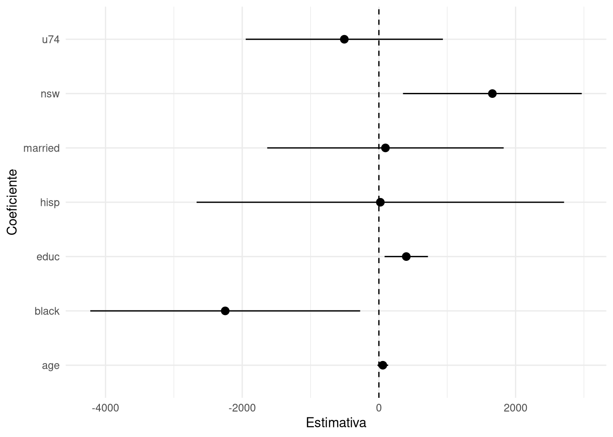
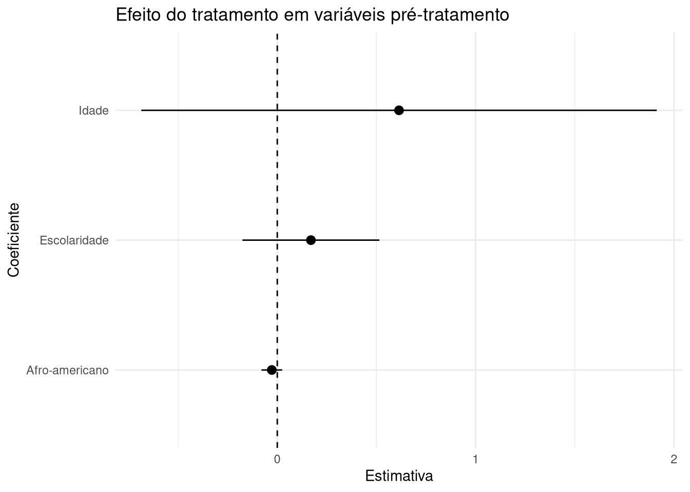
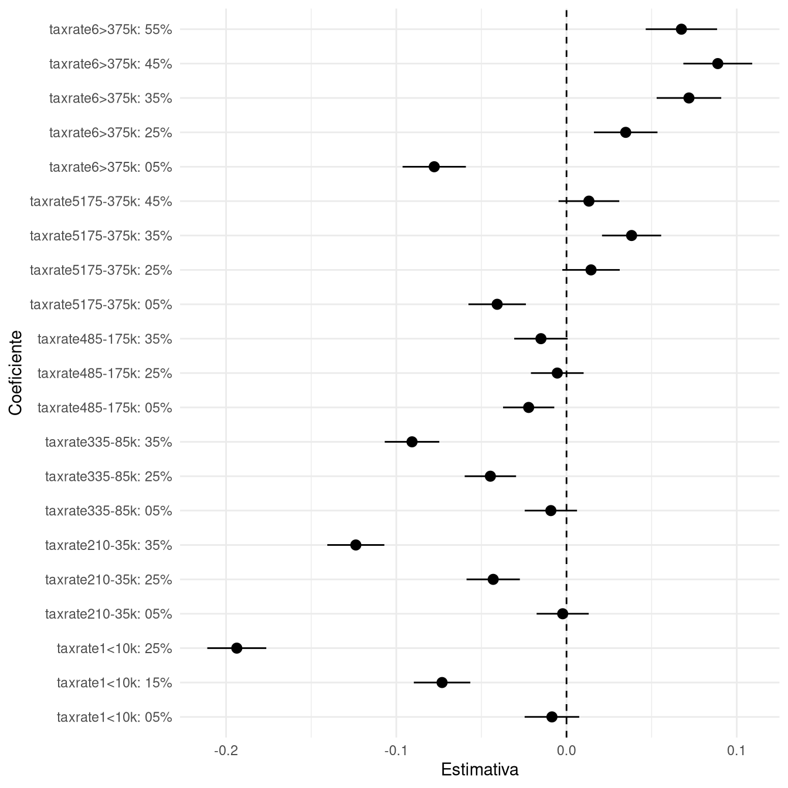

library(tidyverse)
library(haven)
nsw_exp <- read_dta("nsw_exp.dta")
nsw_obs <- read_dta("nsw_obs.dta")Experimentos
Introdução
Estas notas introduzem análise de experimentos em R, o que cobrirá como usar dois estimadores comuns para analisar este tipo de desenho: estimador de diferença de médias e regressão linear por MQO.
Usaremos como exemplo os dados de LaLonde (1986), usados em seu paper clássico comparando os resultados de um randomized controlled trial (i.e., um experimento de campo) de treinamento profissional para homens desempregados sobre suas rendas futuras com os resultados de um estudo observacional. Trata-se de um estudo clássico na Economia, e nas Ciências Sociais, de forma geral, por ser um dos primeiros a mostrar que os resultados de um experimento podem ser muito diferentes dos resultados de um estudo observacional, utilizando modelos de regressão saturados.
Antes de avançar, precisaremos carregar as duas bases, a com dados experimentais e a com dados observacionais. Para isso, usaremos o pacote haven:
As variáveis que temos nas duas bases são:
| Nome | Variável |
|---|---|
| nsw | Dummy para participantes do NSW |
| age | Idade (em anos) |
| educ | Anos de escolaridade |
| black | Dummy para afro-americanos |
| hispanic | Dummy para hispânicos |
| married | Dummy para casados |
| re74 | Ganhos reais (corrigidos pela inflação) para 1974 |
| re75 | Ganhos reais (corrigidos pela inflação) para 1975 |
| re78 | Ganhos reais (corrigidos pela inflação) para 1978 |
| u74 | Dummy para desempregados em 1974 |
| u75 | Dummy para desempregados em 1975 |
| u78 | Dummy para desempregados em 1978 |
Ao final, também analisaremos uma pequena base de survey retirada de Ballard-Rosa, Martin, e Scheve (2017), sobre as preferências em relação a diferentes regimes de taxação nos EUA usando um conjoint experiment.
Estimador de diferença de médias
O primeiro estimador que aplicaremos é o estimador de diferença de médias. Seja \(Y_i\) o valor observado da variável dependente para o indivíduo \(i\), \(D_i \in \{1, 0\}\) o seu status de tratamento, \(N_1\) e \(N_0\) o número de unidades tratadas e não-tradas, o estimador de diferença de médias é:1
\[ \hat{\tau} = \left(\frac{1}{N_1} \sum_{i:D_i=1} Y_i\right) - \left(\frac{1}{N_0} \sum_{i:D_i=0} Y_i\right) \]
Em termos de implementação, portanto, ele é simples: basta calcular a diferença entre a média da variável dependente para os grupos de tratamento e controle. Podemos fazer isso em R em duas etapas:
# Calcula a média de renda futura e erro-padrao
medias <- nsw_exp %>%
group_by(nsw) %>%
summarise(media = mean(re78))
medias# A tibble: 2 × 2
nsw media
<dbl> <dbl>
1 0 4555.
2 1 6349.Como dá para ver, a média do grupo tratado é maior do que a média do grupo de controle. Para calcular a diferença, podemos usar agora:
# Calcula a diferenca de médias
medias %>%
summarise(diff = diff(media))# A tibble: 1 × 1
diff
<dbl>
1 1794.Ou, de forma mais direta usando apenas R-base e um teste T:
# Calcula a diferenca de médias
t.test(re78 ~ nsw, data = nsw_exp)
Welch Two Sample t-test
data: re78 by nsw
t = -2.6741, df = 307.13, p-value = 0.007893
alternative hypothesis: true difference in means between group 0 and group 1 is not equal to 0
95 percent confidence interval:
-3114.6754 -474.0108
sample estimates:
mean in group 0 mean in group 1
4554.802 6349.145 Teste de diferença de médias
No mais das vezes, estamos interessados em usar o estimador de diferença de médias para inferência e teste de hipóteses – o que significa que precisaremos calcular medidas de incerteza de estimativas e, também, P-valores. Dados que média é um estimador simples, também é simples fazer esses cálculos adicionais diretamente, sem a necessidade de funções prontas ou pacotes. Como visto em Lego I, variância nada mais é do que uma espécie de média dos desvios quadrados de cada valor \(Y_i\) em relação à média \(\bar{Y}\). Para o grupo de tratamento, isto é o mesmo que:
\[ s_1^2 = \frac{1}{N_1 - 1} \sum_{i:D_i = 1} (Y_i - \bar{Y}_1)^2 \]
Tendo esse número para os dois grupos, basta dividir cada um por \(N_1\) e \(N_0\), somar o resultado e tirar a sua raiz (cobriremos isso em aula, mas Gerber e Green (2012) detalha o procedimento no capítulo 3):
\[ \hat{\sigma} = \sqrt{\frac{s_1^2}{N_1} + \frac{s_0^2}{N_0}} \]
De forma geral, portanto, precisamos realizar os seguintes procedimentos para calcular estatísticas de interesse e testar a hipótese de que a média dos grupos de tratamento e controle são iguais (a nossa hipótese nula):
- Calculamos a média de cada grupo
- Calculamos a variância de cada grupo
- Dividimos a variância de cada grupo pelo tamanho do grupo
- Calculamos o erro-padrão da estimativa como a raiz da soma dos resultados do passo 3
- Usamos o erro-padrão para calcular T-valor, intervalos de confiança e P-valor
O passo 2, a variância, nada mais é do que uma média dos desvios quadrados de cada valor \(Y_{i:D_i=d}\) em relação à média do grupo \(d\). Em termos de implementação, podemos fazer isso em R da seguinte forma:2
# Calcula a variacia do grupo de tratamento
var1 <- nsw_exp$re78[nsw_exp$nsw == 1] - mean(nsw_exp$re78[nsw_exp$nsw == 1])
var1 <- sum(var1^2) / (length(var1) - 1)
# Calcula a variacia do grupo de controle
var0 <- nsw_exp$re78[nsw_exp$nsw == 0] - mean(nsw_exp$re78[nsw_exp$nsw == 0])
var0 <- sum(var0^2) / (length(var0) - 1)
var1[1] 61896056var0[1] 30072467O passo 3, a divisão da variância pelo tamanho do grupo, é simples:
# Divide a variância pelo tamanho do grupo
var1 <- var1 / length(nsw_exp$re78[nsw_exp$nsw == 1])
var0 <- var0 / length(nsw_exp$re78[nsw_exp$nsw == 0])Isso feito, podemos calcular o erro-padrão da estimativa somando var1 e var0 e tirando a sua raiz quadrada:3
# Calcula o erro-padrão
erro <- sqrt(var1 + var0)
erro[1] 670.9967O erro-padrão é, portanto, de aproximadamente 671. Com isso, podemos calcular o T-valor, intervalos de confiança e P-valor:
# Calcula o t-valor
diferenca <- mean(nsw_exp$re78[nsw_exp$nsw == 1]) - mean(nsw_exp$re78[nsw_exp$nsw == 0])
t <- diferenca / erro
t[1] 2.674146De cara, dado que \(t > 1.96\), fica patente que o efeito não parece ser um que ocorreria por acaso, em função da aleatoriedade do Processo Gerador de Dados. Mas podemos calcular o intervalo de confiança e o P-valor para ter um número mais formal:4
# Calcula o p-valor
2 * pt(-abs(t), df = nrow(nsw_exp) - 2)[1] 0.007769016O cálculo acima é mais complicado (dado que envolve a distribuição cumulativa de uma distribuição \(t\)), mas o intervalo de confiança é simples:
# Calcula o IC
diferenca + c(-1, 1) * qt(0.975, df = nrow(nsw_exp) - 2) * erro[1] 475.6108 3113.0754Como é possível ver, o resultado é o mesmo que o obtido com t.test anteriormente (embora com os sinais trocados por conta da ordem em que consideramos os grupos).
Estimador de regressão linear
Podemos realizar o mesmo teste com modelos de regressão linear – o que, adicionalmente, nos dá a vantagem de termos maior controle sobre o tipo de erro-padrão, se é necessário controlar alguma variável para assumir que \((Y_i(1), Y_i(0)) \not\!\!\perp\!\!\!\perp D_i\), etc. Para facilitar as coisas, usaremos o pacote fixest para reestimar o efeito do programa de treinamento profissional sobre a renda futura dos participantes:
library(fixest)
# Estima o efeito do programa
m1 <- feols(re78 ~ nsw, data = nsw_exp)
summary(m1)OLS estimation, Dep. Var.: re78
Observations: 445
Standard-errors: IID
Estimate Std. Error t value Pr(>|t|)
(Intercept) 4554.80 408.046 11.16247 < 2.2e-16 ***
nsw 1794.34 632.854 2.83532 0.0047875 **
---
Signif. codes: 0 '***' 0.001 '**' 0.01 '*' 0.05 '.' 0.1 ' ' 1
RMSE: 6,564.7 Adj. R2: 0.015606O resulta dispensa muitos comentários. O principal aqui é que o coeficiente de nsw retornou o mesmo que um estimador de diferença de médias, a estimativa de erro-padrão é similar e, da mesma forma, a estatística T e o P-valor. Podemos ir além e incluir, agora, variáveis de controle:
# Estima o efeito do programa
m2 <- feols(re78 ~ nsw + age + educ + black + hisp + married + u74, data = nsw_exp)
summary(m2)OLS estimation, Dep. Var.: re78
Observations: 445
Standard-errors: IID
Estimate Std. Error t value Pr(>|t|)
(Intercept) 1293.8046 2518.6714 0.513685 0.6077316
nsw 1660.4761 632.8607 2.623762 0.0090008 **
age 57.4934 45.1431 1.273579 0.2034895
educ 400.6857 176.6569 2.268158 0.0238068 *
black -2248.5264 1159.4094 -1.939372 0.0530993 .
hisp 21.1637 1548.1689 0.013670 0.9890994
married 95.9200 852.7368 0.112485 0.9104906
u74 -505.8836 710.1823 -0.712329 0.4766411
---
Signif. codes: 0 '***' 0.001 '**' 0.01 '*' 0.05 '.' 0.1 ' ' 1
RMSE: 6,459.8 Adj. R2: 0.033726Como é possível ver, o efeito do programa continua similar, mesmo com a inclusão de variáveis de controle – o que é um resultado da aleatorização do tratamento, que é independente de outras variáveis. Inversamente, o tratamento não deve ter efeito sobre variáveis pré-tratamento, isto é, variáveis que ocorreram antes da administração do programa de treinamento. Podemos checar isso com dois modelos, a título de exemplo:
# Estima o efeito do programa
pre1 <- feols(age ~ nsw + educ + black + hisp + married + u74, data = nsw_exp)
pre2 <- feols(educ ~ nsw + age + black + hisp + married + u74, data = nsw_exp)
etable(pre1, pre2) pre1 pre2
Dependent Var.: age educ
Constant 22.40*** (2.442) 10.87*** (0.4409)
nsw 0.6137 (0.6692) 0.1696 (0.1710)
educ 0.0135 (0.1870)
black 0.7374 (1.227) -0.5187. (0.3126)
hisp -1.397 (1.637) -1.395*** (0.4134)
married 4.110*** (0.8810) 0.3628 (0.2300)
u74 1.899* (0.7462) -0.3714. (0.1913)
age 0.0009 (0.0122)
_______________ _________________ __________________
S.E. type IID IID
Observations 445 445
R2 0.06845 0.04513
Adj. R2 0.05569 0.03205
---
Signif. codes: 0 '***' 0.001 '**' 0.01 '*' 0.05 '.' 0.1 ' ' 1Nesse caso, nsw não tem efeito nem substantivo e nem significativo, o que sugere, realmente, que nenhuma das duas variáveis que analisamos podem ser preditas pelo tratamento.
Estimativa com dados observacionais
Para fechar esta parte, vamos estimar o mesmo efeito com dados observacionais, usando o mesmo modelo de regressão linear. Para isso, usaremos a base nsw_obs:
# Estima o efeito do programa
m3 <- feols(re78 ~ nsw + age + educ + black + hisp + married + u74, data = nsw_obs)
summary(m3)OLS estimation, Dep. Var.: re78
Observations: 2,675
Standard-errors: IID
Estimate Std. Error t value Pr(>|t|)
(Intercept) -9119.878 1785.5512 -5.107598 3.4930e-07 ***
nsw 3132.613 1319.5522 2.373997 1.7667e-02 *
age 233.467 26.8101 8.708176 < 2.2e-16 ***
educ 1747.710 93.6906 18.654072 < 2.2e-16 ***
black -3299.049 651.8200 -5.061288 4.4477e-07 ***
hisp 704.549 1442.7266 0.488346 6.2535e-01
married 3873.129 770.2923 5.028129 5.2812e-07 ***
u74 -13790.664 883.3935 -15.611009 < 2.2e-16 ***
---
Signif. codes: 0 '***' 0.001 '**' 0.01 '*' 0.05 '.' 0.1 ' ' 1
RMSE: 13,296.2 Adj. R2: 0.274401Em relação ao efeito estimado usando um desenho experimental, os dados observacionais inflam o impacto do programa de treinamento profissional – indicando que provavelmente quem procurou o programa já ganharia mais dinheiro de toda forma.
estimatr
Para facilitar a aplicação de estimadores para desenhos experimentais, podemos usar o pacote estimatr, criado por um grupo de cientistas políticos e documentado neste link. Podemos instalá-lo com:
# Instala e carrega o pacote
install.packages("estimatr")
library(estimatr)Para o uso documentado acima, as principais funções do pacote são lm_robust, para estimar modelos lineares por MQO com erros-padrão robustos5; e difference_in_means, para estimar diferenças de médias. Ambas as funções são simples de usar, e retornam objetos que podem ser usados com summary e tidy:
# Estima o efeito do programa
est_medias <- difference_in_means(re78 ~ nsw, data = nsw_exp)
est_modelo <- lm_robust(re78 ~ nsw + age + educ + black + hisp + married + u74, data = nsw_exp)
summary(est_medias)$coefficients
Estimate Std. Error t value Pr(>|t|) CI Lower CI Upper DF
nsw 1794.343 670.9967 2.674146 0.007892971 474.0108 3114.675 307.1325
$design
[1] "Standard"summary(est_modelo)
Call:
lm_robust(formula = re78 ~ nsw + age + educ + black + hisp +
married + u74, data = nsw_exp)
Standard error type: HC2
Coefficients:
Estimate Std. Error t value Pr(>|t|) CI Lower CI Upper DF
(Intercept) 1293.80 2451.86 0.52768 0.59799 -3525.09 6112.7 437
nsw 1660.48 665.45 2.49525 0.01295 352.59 2968.4 437
age 57.49 39.91 1.44065 0.15040 -20.94 135.9 437
educ 400.69 161.41 2.48242 0.01342 83.45 717.9 437
black -2248.53 1004.58 -2.23827 0.02571 -4222.94 -274.1 437
hisp 21.16 1367.87 0.01547 0.98766 -2667.26 2709.6 437
married 95.92 880.27 0.10897 0.91328 -1634.17 1826.0 437
u74 -505.88 733.95 -0.68926 0.49102 -1948.39 936.6 437
Multiple R-squared: 0.04896 , Adjusted R-squared: 0.03373
F-statistic: 3.475 on 7 and 437 DF, p-value: 0.001234Como outra vantagem, podemo usar a função tidy para obter um tibble com os resultados:
tidy(est_medias) term estimate std.error statistic p.value conf.low conf.high df
1 nsw 1794.343 670.9967 2.674146 0.007892971 474.0108 3114.675 307.1325
outcome
1 re78Com isso, podemos, por exemplo, fazer um gráfico dos coeficientes para facilitar a visualização – de um modelo linear, digamos:
est_modelo %>%
tidy() %>%
filter(term != "(Intercept)") %>% # Sem intercep
ggplot(aes(y = term, x = estimate, xmin = conf.low, xmax = conf.high)) +
geom_vline(xintercept = 0, linetype = 2) +
geom_pointrange() +
theme_minimal() +
labs(x = "Estimativa", y = "Coeficiente")
Mais útil, podemos testar o efeito do tratamento em variáveis pré-tratamento para visualizar os resultados com um gráfico (alerta: o código depende de um conhecimento maior do tidyverse):
# Estima o efeito do programa
pre1 <- lm_robust(age ~ nsw + educ + black + hisp + married + u74, data = nsw_exp) %>%
tidy() %>%
filter(term == "nsw") %>%
mutate(var = "Idade")
pre2 <- lm_robust(educ ~ nsw + age + black + hisp + married + u74, data = nsw_exp) %>%
tidy() %>%
filter(term == "nsw") %>%
mutate(var = "Escolaridade")
pre3 <- lm_robust(black ~ nsw + age + educ + hisp + married + u74, data = nsw_exp) %>%
tidy() %>%
filter(term == "nsw") %>%
mutate(var = "Afro-americano")
bind_rows(pre1, pre2, pre3) %>%
ggplot(aes(y = var, x = estimate, xmin = conf.low, xmax = conf.high)) +
geom_vline(xintercept = 0, linetype = 2) +
geom_pointrange() +
theme_minimal() +
labs(x = "Estimativa", y = "Coeficiente",
title = "Efeito do tratamento em variáveis pré-tratamento")
Com a ajuda de outros pacotes, também é fácil exportar os resultados de estimatr para tabelas. Por exemplo, podemos usar o pacote modelsummary, que já vimos:
library(modelsummary)
est_modelo_simples <- lm_robust(re78 ~ nsw, data = nsw_exp)
modelsummary(list(est_modelo_simples, est_modelo),
stars = TRUE,
statistic = "p.value", output = "markdown",
coef_map = c("(Intercept)" = "Constante", "nsw" = "Tratamento"))| (1) | (2) | |
|---|---|---|
| Constante | 4554.802*** | 1293.805 |
| (<0.001) | (0.598) | |
| Tratamento | 1794.343** | 1660.476* |
| (0.008) | (0.013) | |
| :———– | ————: | ———-: |
| Num.Obs. | 445 | 445 |
| R2 | 0.018 | 0.049 |
| R2 Adj. | 0.016 | 0.034 |
| AIC | 9091.5 | 9089.1 |
| BIC | 9103.8 | 9126.0 |
| RMSE | 6564.74 | 6459.85 |
Note: ^^ + p < 0.1, * p < 0.05, ** p < 0.01, *** p < 0.001
Efeito marginal do componente (AMCE)
Nesta última seção, veremos rapidamente como aplicar regressão linear para estimar o efeito marginal do componente (AMCE) de um tratamento. Para isso, usaremos uma base de dados retirada de Ballard-Rosa, Martin, e Scheve (2017), disponível aqui, que contém as preferências de indivíduos em relação a diferentes regimes de taxação nos EUA. A base contém poucas variáveis, mas é para ilustrar o estimador. Começamos carregando os dados que estão em CSV:
# Carrega os dados
taxes <- read_csv("taxes.csv")Podemos ver a estrutura da base com:
# Mostra a estrutura da base
glimpse(taxes)Rows: 32,000
Columns: 13
$ chose_plan <dbl> 1, 0, 1, 0, 1, 0, 1, 0, 1, 0, 0, 1, 1, 0, 0, 1, 0,…
$ taxrate1 <chr> "<10k: 5%", "<10k: 0%", "<10k: 15%", "<10k: 15%", …
$ taxrate2 <chr> "10-35k: 25%", "10-35k: 35%", "10-35k: 25%", "10-3…
$ taxrate3 <chr> "35-85k: 35%", "35-85k: 5%", "35-85k: 5%", "35-85k…
$ taxrate4 <chr> "85-175k: 25%", "85-175k: 15%", "85-175k: 25%", "8…
$ taxrate5 <chr> "175-375k: 15%", "175-375k: 5%", "175-375k: 25%", …
$ taxrate6 <chr> ">375k: 5%", ">375k: 45%", ">375k: 25%", ">375k: 5…
$ taxrev <chr> "95-105%", "105-125%", "95-105%", "75-95%", "105-1…
$ inequality_aversion <dbl> 0, 0, 0, 0, 0, 0, 0, 0, 0, 0, 0, 0, 0, 0, 0, 0, 1,…
$ taxes_harm_economy <dbl> 1, 1, 1, 1, 1, 1, 1, 1, 1, 1, 1, 1, 1, 1, 1, 1, 0,…
$ partyid <chr> "Republican", "Republican", "Republican", "Republi…
$ ID <dbl> 177191531, 177191531, 177191531, 177191531, 177191…
$ weight <dbl> 6.828660, 6.828660, 6.828660, 6.828660, 6.828660, …Como dá para ver, temos como variável dependente choose_plan, que indica se um perfil hipotético de política de taxação foi (1) ou não (0) selecionado. Os perfis são definidos por seis componentes iniciados tax (e.g., taxrate1, taxrate2), que indicam a alíquota sugerida para cada faixa de renda anual.
Isso feito, o estimador do AMCE é apenas uma variação do que já vimos: estimamos um modelo de regressão linear com os diferentes atributos aleatorizados como tratamento. Por exemplo, para estimar o AMCE do componente tax (que é a taxa de imposto), usamos:
cj <- lm_robust(chose_plan ~ taxrate1 + taxrate2 + taxrate3 + taxrate4 + taxrate5 + taxrate6,
clusters = ID, data = taxes)
cj Estimate Std. Error t value Pr(>|t|)
(Intercept) 0.621875367 0.013123197 47.3874914 1.722575e-315
taxrate1<10k: 15% -0.073108439 0.008459878 -8.6417841 1.159886e-17
taxrate1<10k: 25% -0.193712404 0.008835955 -21.9231989 4.624763e-95
taxrate1<10k: 5% -0.008562999 0.008175335 -1.0474188 2.950413e-01
taxrate210-35k: 25% -0.043072217 0.007985812 -5.3935926 7.780535e-08
taxrate210-35k: 35% -0.123779054 0.008544427 -14.4865247 3.583595e-45
taxrate210-35k: 5% -0.002254620 0.007803330 -0.2889305 7.726663e-01
taxrate335-85k: 25% -0.044727169 0.007693865 -5.8133547 7.172618e-09
taxrate335-85k: 35% -0.090762797 0.008169538 -11.1099062 8.043787e-28
taxrate335-85k: 5% -0.009194678 0.007836756 -1.1732760 2.408336e-01
taxrate485-175k: 25% -0.005424936 0.007891790 -0.6874152 4.919060e-01
taxrate485-175k: 35% -0.015025665 0.008002930 -1.8775204 6.060145e-02
taxrate485-175k: 5% -0.022240453 0.007672150 -2.8988554 3.788648e-03
taxrate5175-375k: 25% 0.014401264 0.008604154 1.6737571 9.434932e-02
taxrate5175-375k: 35% 0.038231552 0.008857437 4.3163222 1.671375e-05
taxrate5175-375k: 45% 0.013157327 0.009096260 1.4464547 1.482212e-01
taxrate5175-375k: 5% -0.040737725 0.008604726 -4.7343429 2.366839e-06
taxrate6>375k: 25% 0.034774843 0.009517663 3.6537164 2.659657e-04
taxrate6>375k: 35% 0.071922962 0.009670997 7.4369749 1.595445e-13
taxrate6>375k: 45% 0.088864878 0.010306640 8.6220996 1.425409e-17
taxrate6>375k: 5% -0.077717384 0.009479144 -8.1987770 4.601144e-16
taxrate6>375k: 55% 0.067500551 0.010689116 6.3148864 3.406463e-10
CI Lower CI Upper DF
(Intercept) 0.596136474 0.6476142598 1740.356
taxrate1<10k: 15% -0.089700148 -0.0565167299 1885.128
taxrate1<10k: 25% -0.211041707 -0.1763831017 1881.361
taxrate1<10k: 5% -0.024596696 0.0074706979 1877.659
taxrate210-35k: 25% -0.058734224 -0.0274102098 1876.297
taxrate210-35k: 35% -0.140536583 -0.1070215244 1884.963
taxrate210-35k: 5% -0.017558684 0.0130494438 1886.499
taxrate335-85k: 25% -0.059816538 -0.0296377991 1888.578
taxrate335-85k: 35% -0.106785090 -0.0747405034 1883.958
taxrate335-85k: 5% -0.024564318 0.0061749624 1882.795
taxrate485-175k: 25% -0.020902535 0.0100526622 1877.969
taxrate485-175k: 35% -0.030721220 0.0006698906 1880.876
taxrate485-175k: 5% -0.037287267 -0.0071936401 1882.228
taxrate5175-375k: 25% -0.002473734 0.0312762613 1829.204
taxrate5175-375k: 35% 0.020859795 0.0556033096 1828.391
taxrate5175-375k: 45% -0.004682828 0.0309974829 1827.676
taxrate5175-375k: 5% -0.057613856 -0.0238615944 1827.547
taxrate6>375k: 25% 0.016107861 0.0534418250 1778.383
taxrate6>375k: 35% 0.052955219 0.0908907050 1774.569
taxrate6>375k: 45% 0.068650519 0.1090792373 1783.809
taxrate6>375k: 5% -0.096308837 -0.0591259307 1775.553
taxrate6>375k: 55% 0.046536010 0.0884650917 1779.517Vale notar que, como os diferentes tratamentos são independentes uns dos outros, estimar apenas uma versão reduzida do experimento resulta em estimativas similares:
cj2 <- lm_robust(chose_plan ~ taxrate1, clusters = ID, data = taxes)
cj2 Estimate Std. Error t value Pr(>|t|) CI Lower
(Intercept) 0.568902362 0.005405219 105.2505573 0.000000e+00 0.55830072
taxrate1<10k: 15% -0.073439341 0.008580787 -8.5585788 2.329752e-17 -0.09026818
taxrate1<10k: 25% -0.194073702 0.008921331 -21.7538954 8.858244e-94 -0.21157044
taxrate1<10k: 5% -0.007065347 0.008268703 -0.8544686 3.929544e-01 -0.02328216
CI Upper DF
(Intercept) 0.579504005 1686.775
taxrate1<10k: 15% -0.056610506 1885.640
taxrate1<10k: 25% -0.176576959 1881.638
taxrate1<10k: 5% 0.009151463 1878.486Novamente, podemos fazer um gráfico dos resultados para simplificar a visualização6:
cj %>%
tidy() %>%
filter(term != "(Intercept)") %>%
mutate(term = str_replace(term, " 5%", " 05%")) %>%
ggplot(aes(y = term, x = estimate, xmin = conf.low, xmax = conf.high)) +
geom_vline(xintercept = 0, linetype = 2) +
geom_pointrange() +
theme_minimal() +
labs(x = "Estimativa", y = "Coeficiente")
Referências
Ballard-Rosa, Cameron, Lucy Martin, e Kenneth Scheve. 2017. «The structure of American income tax policy preferences». The Journal of Politics 79 (1): 1–16.
Gerber, Alan S, e Donald P Green. 2012. «Field experiments: Design, analysis, and interpretation». (No Title).
LaLonde, Robert J. 1986. «Evaluating the econometric evaluations of training programs with experimental data». The American economic review, 604–20.
Notas de rodapé
Note que usamos \(i:D_i=1\) para indicar que a média é calculada apenas para os indivíduos tratados, isto é, o indexador \(i\) pula observações com \(D_i=0\).↩︎
No cálculo de variância, em vez de dividir a soma dos desvios quadrados pelo número de elementos, usamos como denominador o número de elementos menos 1 – dado que já estimamos a média do grupo, que é um parâmetro. Informalmente, isso significa dizer que já gastamos uma observação.↩︎
A título de intuição, quando temos duas amostras independentes o erro-padrão da diferença de estimativas é uma espécie de soma de suas medidas de dispersão. Um exemplo: imagine duas pesquisas eleitorais que dizem que a candidata A tem 20% de intenção de votos, com margem de erro de 2 pontos percentuais; e outra que diz que ela subiu para 22% da intenção de votos, com margem também de 2pp; nesse caso, a diferença entre as estimativas da candidata A pode ser tanto de 2pp (\(0.22 - 0.2 = 2pp\)) quanto de 6pp (\(0.18 - 0.24 = -6pp\)).↩︎
Aqui, os graus de liberdade são indicados por
df. Note que diminuímos o número de observações, agora, de 2 dado que ↩︎Não cobrimos tanto inferência nesse curso, embora seja um tópico fundamental; de toda forma, erros-padrão robustos são úteis para o caso em que acreditamos (ou temos evidência) de que a variação dos resíduos não é homogênea. Para uma explicação formal, ver esta página.↩︎
O
ggplotautomaticamente ordenar em orderm alfabética variáveischaracter, o que é o caso determ; de toda forma, ao fazer isso “5%” é considerado posterior a “25%”; mudaremos isso usandostr_replacepara trocar ” 5%” por “05%”.↩︎